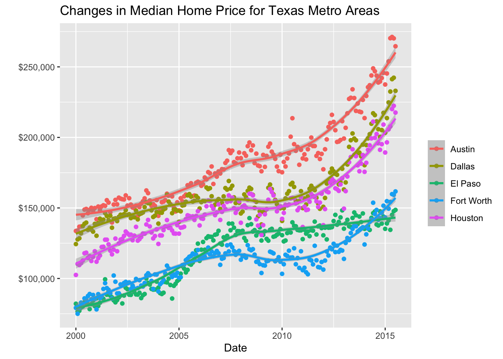
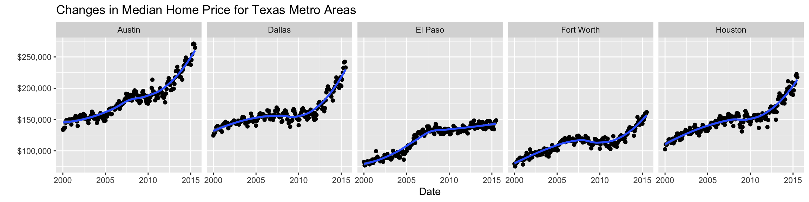
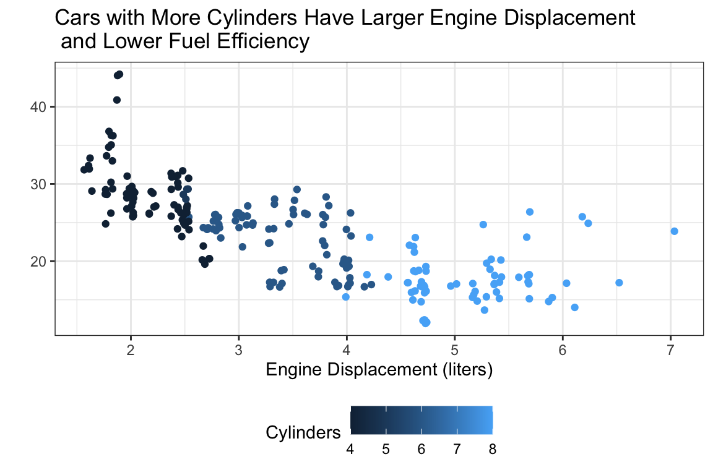
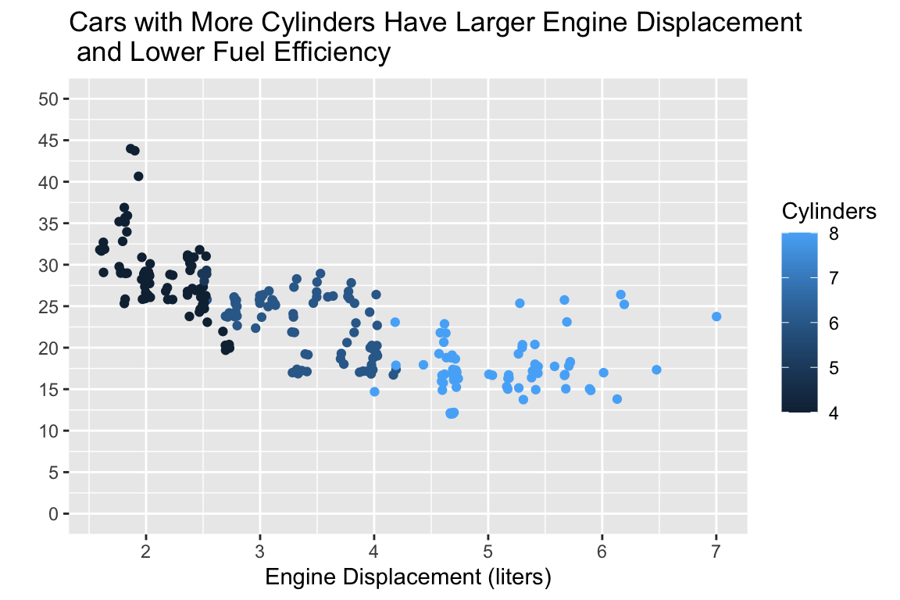
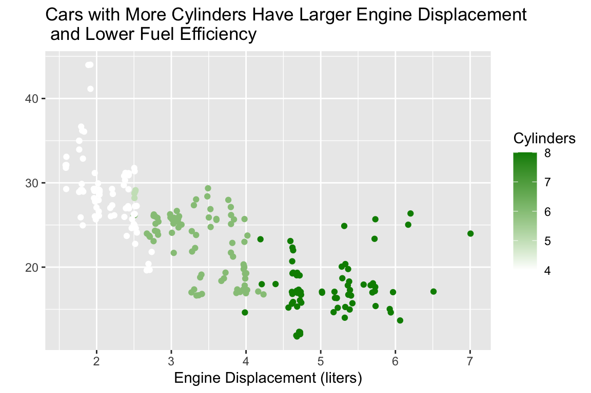

ggplot(
data = <DATA>,
mapping = aes(<MAPPINGS>)
) +
<GEOM FUNCTION>() +
any other arguments...Basics of Graphics
Tuesday, January 14
Today we will…
- Accessing Practice Activities
- New Material
- Tidy Data
- Load External Data
- Graphics (and
ggplot2)
- PA 2: Using Data Visualization to Find the Penguins
Grammar of Graphics
Grammar of Graphics
The Grammar of Graphics (GoG) is a principled way of specifying exactly how to create a particular graph from a given data set. It helps us to systematically design new graphs.
. . .
Think of a graph or a data visualization as a mapping…
…FROM variables in the data set (or statistics computed from the data)…
…TO visual attributes (or “aesthetics”) of marks (or “geometric elements”) on the page/screen.
Why GoG?
- It’s more flexible than a “chart zoo” of named graphs.
- The software understands the structure of your graph.
- It easily automates graphing of data subsets.
Components of GoG
data: dataframe containing variablesaes: aesthetic mappings (position, color, symbol, …)geom: geometric element (point, line, bar, box, …)stat: statistical variable transformation (identity, count, linear model, quantile, …)scale: scale transformation (log scale, color mapping, axes tick breaks, …)coord: Cartesian, polar, map projection, …facet: divide into subplots using a categorical variable
Using ggplot2
How to Build a Graphic
Complete this template to build a basic graphic:
. . .
Notice, every + adds another layer to our graphic.
. . .
Also notice that I’m using named arguments to make my code easier to read.

![An image of a gray square with white gridlines representing a plotting canvas where the variables have been assigned to the x and y aesthetics. On the x-axis there is a variable named 'class' with seven different values mapped to a particular white gridline---2seater, compact, midsize, minivan, pickup, subcompact, suv. On the y-axis there is a variable named 'hwy' with three printed values mapped to different white gridlines---20, 30, and 40. The spaces between these gridlines represent values between the printed values (e.g., 25).](week-2-ggplot_files/figure-html/add-variables-to-aesthetics-1.png)
![A visualization of the different hwy milage for different types of cars. On the x-axis there is a variable named 'class' with seven different values mapped to a particular white gridline---2seater, compact, midsize, minivan, pickup, subcompact, suv. On the y-axis there is a variable named 'hwy' with three printed values mapped to different white gridlines---20, 30, and 40. The spaces between these gridlines represent values between the printed values (e.g., 25). The visualization has a variety of points (black dots), where each point represents a particular vehicle. Each point is horizontally aligned with the type of vehicle and vertically aligned with the highway mileage for the vehicle. Overall, it appears that pickups and suvs have the lowest highway mileage, with minivans having slightly better milage. compact, midsize, and subcompact vehicles have fairly similar milage, with cars ranging from 25 to 40 miles per gallon.](week-2-ggplot_files/figure-html/adding-jittered-points-1.png)
Aesthetics
We map variables (columns) from the data to aesthetics on the graphic using the aes() function.
. . .
What aesthetics can we set (see ggplot2 cheat sheet for more)?
- x, y
- color, fill
- linetype
- size
- shape
Aesthetics
We map variables (columns) from the data to aesthetics on the graphic using the aes() function.
What aesthetics can we set (see ggplot2 cheat sheet for more)?
- x, y
- color, fill
- linetype
- size
- shape

Special Properties of Aesthetics
Special Properties of Aesthetics
Geometric Objects
Wee use a geom_XXX() function to represent data points.
. . .
one variable
geom_density()geom_dotplot()geom_histogram()geom_boxplot()
two variable
geom_point()geom_line()geom_density_2d()
three variable
geom_contour()geom_raster()
This is not an exhaustive list – see ggplot2 cheat sheet.
Creating a Graphic
To create a specific type of graphic, we will combine aesthetics and geometric objects.
. . .
Let’s try it!
Start with the TX housing data.

Make a plot of median house price over time (including both individual data points and a smoothed trend line), distinguishing between different cities .

Code
ggplot(data = sm_tx,
mapping = aes(x = date,
y = median,
color = city)
) +
geom_point() +
geom_smooth(method = "loess") +
labs(x = "Date",
y = "",
color = " ",
title = "Changes in Median Home Price for Texas Metro Areas") +
scale_y_continuous(labels = scales::label_dollar())`geom_smooth()` using formula = 'y ~ x'
Faceting
Extracts subsets of data and places them in side-by-side plots.
Code
`geom_smooth()` using formula = 'y ~ x'
Faceting
facet_wrap(~ b): facets by one variablenrowcontrols the number of rows the facets are output intoncolcontrols the number of columns the facets are output into
facet_grid(a ~ b): facet by two variables- variable
awill be assigned to the rows - variable
bwill be assigned to the columns into both rows and columns
- variable
You can set scales to let axis limits vary across facets:
facet_grid(y ~ x, scales = ______)
"free"– both x- and y-axis limits adjust to individual facets"free_x"– only x-axis limits adjust"free_y"– only y-axis limits adjust
Statistical Transformation: stat
A stat transforms an existing variable into a new variable to plot.
identityleaves the data as is.countcounts the number of observations.summaryallows you to specify a desired transformation function.
. . .
Sometimes these statistical transformations happen under the hood when we use a specific geom_XXX().
Statistical Transformation: stat


Position Adjustements
Position adjustments determine how to arrange geom’s that would otherwise occupy the same space.
position = "dodge": Arrange elements side by side.position = "fill": Stack elements on top of one another + normalize height.position = "stack": Stack elements on top of one another.position = "jitter": Add random noise tox&yposition of each element to avoid overplotting (seegeom_jitter()).
Position Adjustements

Plot Customizations
Code
ggplot(data = mpg,
mapping = aes(x = displ, y = hwy, color = cyl)
) +
geom_jitter() +
labs(x = "Engine Displacement (liters)",
y = " ",
color = "Cylinders",
title = "Cars with More Cylinders Have Larger Engine Displacement\n and Lower Fuel Efficiency") +
theme_bw() +
theme(legend.position = "bottom")
Code
ggplot(data = mpg,
mapping = aes(x = displ, y = hwy, color = cyl)
) +
geom_jitter() +
labs(x = "Engine Displacement (liters)",
y = " ",
color = "Cylinders",
title = "Cars with More Cylinders Have Larger Engine Displacement\n and Lower Fuel Efficiency") +
scale_y_continuous(limits = c(0, 50),
breaks = seq(from = 0, to = 50, by = 5)
)
Code
ggplot(data = mpg,
mapping = aes(x = displ, y = hwy, color = cyl)
) +
geom_jitter() +
labs(x = "Engine Displacement (liters)",
y = " ",
color = "Cylinders",
title = "Cars with More Cylinders Have Larger Engine Displacement\n and Lower Fuel Efficiency") +
scale_color_gradient(low = "white", high = "green4")
Nicely Formatted Code
ggplot Code
It is good practice to put each geom and aes on a new line.
- This makes code easier to read!
- Generally: no line of code should be over 80 characters long.
ggplot(data = mpg, mapping = aes(x = cty, y = hwy, color = class)) + geom_point() + theme_bw() + labs(x = "City (mpg)", y = "Highway (mpg)")ggplot(data = mpg,
mapping = aes(x = cty, y = hwy, color = class)) +
geom_point() +
theme_bw() +
labs(x = "City (mpg)", y = "Highway (mpg)")ggplot(data = mpg,
mapping = aes(
x = cty,
y = hwy,
color = class
)
) +
geom_point() +
theme_bw() +
labs(x = "City (mpg)",
y = "Highway (mpg)")Let’s Make Some Visualizations!
PA 2: Using Data Visualization to Find the Penguins

Using Data Visualization to Find the Penguins
This puzzle activity will require knowledge of:
- installing and loading packages in R
- formatting code chunks in Quarto
- interpreting the context of a dataset
- data types / variable types
- different types of visualizations
- what visualization(s) go with different data types
- how to make visualizations with ggplot2
- choosing between different aesthetic options
None of us have all these abilities. Each of us has some of these abilities.
Pair Programming Expectations
During your collaboration, you and your partner will alternate between two roles:
. . .
Developer
- Reads prompt and ensures Coder understands what is being asked.
- Types the code specified by the Coder into the Quarto document.
- Runs the code provided by the Coder.
- Works with Coder to debug the code.
- Evaluates the output.
- Works with Coder to write code comments.
Coder
- Reads out instructions or prompts
- Directs the Developer what to type.
- Talks with Developer about their ideas.
- Manages resources (e.g., cheatsheets, textbook).
- Works with Developer to debug the code.
- Works with Developer to write code comments.
Group Norms
- Think and work together. Do not divide the work.
- You are smarter together.
- Be open minded.
- No cross-talk with other groups.
- Communicate with each other!
ggplot2 Resources
Every group should have a ggplot2 cheatsheet!
On the Front
- Column 1: the “template” for making a ggplot
- Column 3: creating plots for two continuous variables
- Column 4: creating plots for one discrete or one continuous variable
On the Back
- Column 4: adding facets and labels to your plot
- Column 3: adding themes to your plot (if you have extra time)

Submission
When you have completed the visualization tasks, you will work as a group to answer the five questions posed at the end of the document.
Each person will input the answers to these questions in the PA2 Canvas quiz.
Each person also needs to submit their
PA-2.htmlfile on Canvas.